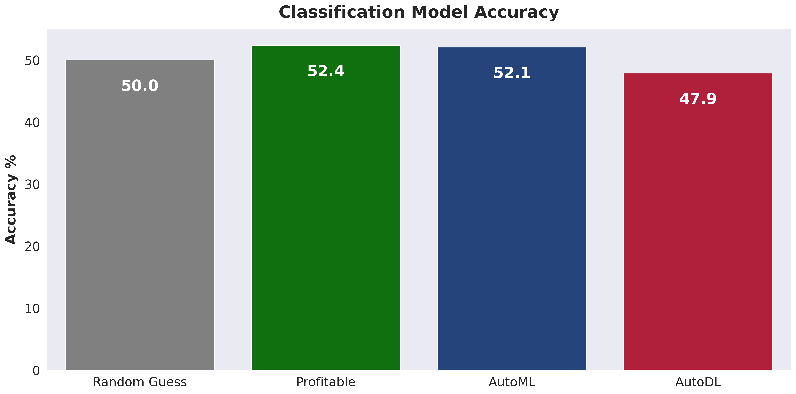

NBA Betting

Table of Contents
Introduction
Goal
Create a Profitable and Comprehensive System for Predicting the Outcomes of NBA Games.
Motivation
NBA betting sits at an intersection of my interests, knowledge, skills, and goals which makes it a project that is both beneficial and exciting for me. A lucky combination!
- NBA - Huge fan of professional basketball. Especially since 2015. Main focus is on the analytical and financial aspects of the league.
- Data Science - Past Education and Current Career Focus.
- Sports Stats - Lifelong interest starting with baseball and moving into other sports.
- Investing - Education in Finance - Sportsbetting as an investment option.
Plan
How to predict a NBA game result?
- Team Prediction Framework - Combination of ML/DL and traditional algorithms used to predict the performance of teams as a whole.
- Player Prediction Framework - Combination of ML/DL and Traditional Algorithms used to predict the performance of individual players.
- Player Interaction and Synergy Framework - Focused on understanding and predicting the performance of players in various combinations on and off the court. Example: How does Steph Curry perform when Draymond Green is on the court vs off the court?
- Game Prediction Framework - Betting market data and other misc predictors of game outcomes.
- Prediction Framework Integration - Combining the 4 prediction frameworks into a single bet management system.
Data Point Examples
| All in One Team and Player Advanced Stats<ul><li>RAPTOR - FiveThirtyEight</li><li>DARKO - The Athletic</li><li>LEBRON - BBall Index</li><li>EPM - Dunks and Threes</li></ul> | Long-Run Team Quality and Opponent Quality<ul><li>Traditional Box Score Stats</li><li>Advanced Stats</li><li>Elo Ratings</li><li>Power Rankings</li></ul> | Recent Team Performance<ul><li>Last 3, 5, 10, 20 Days</li><li>Game Results</li><li>Traditional Stats</li><li>Advanced Stats</li><ul> |
| Injuries, Rest, Fatigue<ul><li>Estimated Performance % for Players - Injury % and Fatigue %</li><li>Schedule Effects - Back2Backs, 3 Games in 4 Nights</li></ul> | Game Location<ul><li>Home vs. Road Adjustment</li><li>Altitude Effects for Denver and Utah</li></ul> | Seasonal Effects<ul><li>Tanking for Draft Position</li><li>Playoff Seed Positioning</li></ul> |
Data Engineering
Data Acquisition and Storage

ETL

Exploratory Data Analysis
Average Vegas Point Spread Error Per Game Over Time
There is a possibility for improvement over the vegas lines for NBA games. The average miss for the vegas line vs the actual game result is over 9 points since 2010!

AutoML


Bet Decisions

Web App and Dashboard